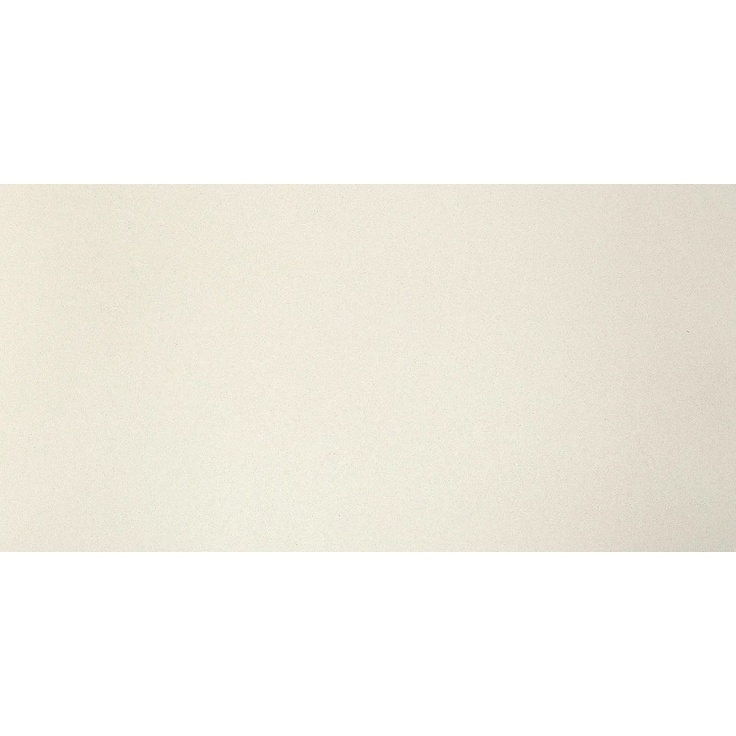
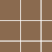

Керамогранит в наличии в Санкт-Петербурге
Каталог керамогранита для строительных объектов. Сравните форматы, сорт и артикулы, проверьте цену за м² с НДС. Склад в Войскорово, самовывоз и доставка по Санкт-Петербургу и Ленинградской области.
Форматы и характеристики
В подборке есть форматы: 600×600, 450×450, 1200×600, 300×300, 400×400, 500×125, 330×330, 600×150, 800×200 мм. На странице каждой позиции указаны размер, сорт и артикул, если они есть в исходных данных, а также остаток и цена или отметка «Цена по запросу». Перед оплатой уточните наличие у менеджера.
В каталоге 102 позиций · обновлено 1 октября 2026 года · остаток от 30 м²
 Мирабо Серый Обрезной600 × 600 × 9 мм, Kerama Marazzi, 1 сортВ наличии 7 848 м²Артикул: DD638520R980 ₽/м²
Мирабо Серый Обрезной600 × 600 × 9 мм, Kerama Marazzi, 1 сортВ наличии 7 848 м²Артикул: DD638520R980 ₽/м² Bianco Белый450 × 450 × 8 мм, М-Квадрат, ГОСТВ наличии 6 708 м²Артикул: 731200650 ₽/м²
Bianco Белый450 × 450 × 8 мм, М-Квадрат, ГОСТВ наличии 6 708 м²Артикул: 731200650 ₽/м² Terrazzo mix Бежевый450 × 450 × 8 мм, М-Квадрат, ГОСТВ наличии 7 380 м²Артикул: 730671650 ₽/м²
Terrazzo mix Бежевый450 × 450 × 8 мм, М-Квадрат, ГОСТВ наличии 7 380 м²Артикул: 730671650 ₽/м² Astaria Ice Белый450 × 450 × 8 мм, М-Квадрат, ГОСТВ наличии 6 309 м²Артикул: 737113650 ₽/м²
Astaria Ice Белый450 × 450 × 8 мм, М-Квадрат, ГОСТВ наличии 6 309 м²Артикул: 737113650 ₽/м² Hornito Amber Коричневый Светлый450 × 450 × 8 мм, М-Квадрат, ГОСТВ наличии 5 197 м²Артикул: 736183650 ₽/м²
Hornito Amber Коричневый Светлый450 × 450 × 8 мм, М-Квадрат, ГОСТВ наличии 5 197 м²Артикул: 736183650 ₽/м² Керамогранит технический Соль-Перец Серый Матовая300 × 300 × 7 мм, Квадро ДекорВ наличии 4 912 м²610 ₽/м²
Керамогранит технический Соль-Перец Серый Матовая300 × 300 × 7 мм, Квадро ДекорВ наличии 4 912 м²610 ₽/м² Toronto Betton Grey450 × 450 × 8 мм, М-Квадрат, ГОСТВ наличии 4 841 м²Артикул: 737299650 ₽/м²
Toronto Betton Grey450 × 450 × 8 мм, М-Квадрат, ГОСТВ наличии 4 841 м²Артикул: 737299650 ₽/м² Ferrum Коричневый600 × 600 × 10 мм, М-Квадрат, ГОСТВ наличии 4 017 м²Артикул: NR0342900 ₽/м²
Ferrum Коричневый600 × 600 × 10 мм, М-Квадрат, ГОСТВ наличии 4 017 м²Артикул: NR0342900 ₽/м² Мирабо Серый Тёмный Матовый Обрезной600 × 1200 × 9 мм, Kerama Marazzi, 1 сортВ наличии 3 342 м²980 ₽/м²
Мирабо Серый Тёмный Матовый Обрезной600 × 1200 × 9 мм, Kerama Marazzi, 1 сортВ наличии 3 342 м²980 ₽/м² Терраццо Серый600 × 600 × 10 мм, М-Квадрат, ГОСТВ наличии 3 126 м²Артикул: NR0136960 ₽/м²
Терраццо Серый600 × 600 × 10 мм, М-Квадрат, ГОСТВ наличии 3 126 м²Артикул: NR0136960 ₽/м² Каньон Серый Светлый450 × 450 × 8 мм, М-Квадрат, ГОСТВ наличии 3 126 м²Артикул: 732071650 ₽/м²
Каньон Серый Светлый450 × 450 × 8 мм, М-Квадрат, ГОСТВ наличии 3 126 м²Артикул: 732071650 ₽/м² Sanar Серый600 × 600 × 10 мм, М-Квадрат, ГОСТВ наличии 2 794 м²Артикул: NR0377960 ₽/м²
Sanar Серый600 × 600 × 10 мм, М-Квадрат, ГОСТВ наличии 2 794 м²Артикул: NR0377960 ₽/м² Мирабо Бежевый Обрезной600 × 600 × 9 мм, Kerama Marazzi, 1 сортВ наличии 2 675 м²Артикул: DD638420R980 ₽/м²
Мирабо Бежевый Обрезной600 × 600 × 9 мм, Kerama Marazzi, 1 сортВ наличии 2 675 м²Артикул: DD638420R980 ₽/м² DACITE BASE GREY600 × 600 × 9,5 мм, производство КазахстанВ наличии 2 633 м²980 ₽/м²
DACITE BASE GREY600 × 600 × 9,5 мм, производство КазахстанВ наличии 2 633 м²980 ₽/м² Hornito Silver Серый450 × 450 × 8 мм, М-Квадрат, ГОСТВ наличии 2 626 м²Артикул: 737185650 ₽/м²
Hornito Silver Серый450 × 450 × 8 мм, М-Квадрат, ГОСТВ наличии 2 626 м²Артикул: 737185650 ₽/м² Savage Коричневый Светлый600 × 600 × 10 мм, М-Квадрат, ГОСТВ наличии 2 478 м²Артикул: GSR0072960 ₽/м²
Savage Коричневый Светлый600 × 600 × 10 мм, М-Квадрат, ГОСТВ наличии 2 478 м²Артикул: GSR0072960 ₽/м² Chantilly Cemento Navy450 × 450 × 8 мм, М-Квадрат, ГОСТВ наличии 2 432 м²Артикул: 731381650 ₽/м²
Chantilly Cemento Navy450 × 450 × 8 мм, М-Квадрат, ГОСТВ наличии 2 432 м²Артикул: 731381650 ₽/м² SILENT GREY600 × 600 × 9,5 мм, производство КазахстанВ наличии 2 345 м²980 ₽/м²
SILENT GREY600 × 600 × 9,5 мм, производство КазахстанВ наличии 2 345 м²980 ₽/м² Astaria Graphite Графит450 × 450 × 8 мм, М-Квадрат, ГОСТВ наличии 2 255 м²Артикул: 737312650 ₽/м²
Astaria Graphite Графит450 × 450 × 8 мм, М-Квадрат, ГОСТВ наличии 2 255 м²Артикул: 737312650 ₽/м² Black Terrazzo Чёрный600 × 600 × 10 мм, М-Квадрат, ГОСТВ наличии 2 187 м²Артикул: GSR0379960 ₽/м²
Black Terrazzo Чёрный600 × 600 × 10 мм, М-Квадрат, ГОСТВ наличии 2 187 м²Артикул: GSR0379960 ₽/м² Matera Бежевый600 × 600 × 10 мм, М-Квадрат, ГОСТВ наличии 2 158 м²Артикул: GSR0070960 ₽/м²
Matera Бежевый600 × 600 × 10 мм, М-Квадрат, ГОСТВ наличии 2 158 м²Артикул: GSR0070960 ₽/м² Коллиано Бежевый Светлый300 × 300 × 8 мм, Kerama Marazzi, 1 сортВ наличии 2 073 м²Узнать цену
Коллиано Бежевый Светлый300 × 300 × 8 мм, Kerama Marazzi, 1 сортВ наличии 2 073 м²Узнать цену Baiterek Beige600 × 600 × 9,5 мм, производство КазахстанВ наличии 1 946 м²900 ₽/м²
Baiterek Beige600 × 600 × 9,5 мм, производство КазахстанВ наличии 1 946 м²900 ₽/м² Прожетто Серый Светлый600 × 600 × 10 мм, М-Квадрат, ГОСТВ наличии 1 751 м²Артикул: NR0025960 ₽/м²
Прожетто Серый Светлый600 × 600 × 10 мм, М-Квадрат, ГОСТВ наличии 1 751 м²Артикул: NR0025960 ₽/м² NEO Серый400 × 400 × 7 мм, Unitile (г. Шахты), СтандартВ наличии 1 731 м²Артикул: NEOУзнать цену
NEO Серый400 × 400 × 7 мм, Unitile (г. Шахты), СтандартВ наличии 1 731 м²Артикул: NEOУзнать цену Грани Таганая GTF400M ЗИМНИЙ БЕЛЫЙ1200 × 600 мм, Грани ТаганаяВ наличии 1 587 м²Артикул: GTF400MУзнать цену
Грани Таганая GTF400M ЗИМНИЙ БЕЛЫЙ1200 × 600 мм, Грани ТаганаяВ наличии 1 587 м²Артикул: GTF400MУзнать цену Breccia Romano Белый450 × 450 × 8 мм, М-Квадрат, СтандартВ наличии 1 573 м²Артикул: 730091650 ₽/м²
Breccia Romano Белый450 × 450 × 8 мм, М-Квадрат, СтандартВ наличии 1 573 м²Артикул: 730091650 ₽/м² Грани Таганая GT047M УМБРА1200 × 600 мм, Грани ТаганаяВ наличии 1 451 м²Артикул: GT047MУзнать цену
Грани Таганая GT047M УМБРА1200 × 600 мм, Грани ТаганаяВ наличии 1 451 м²Артикул: GT047MУзнать цену Мирабо Серый Тёмный Обрезной600 × 600 × 9 мм, Kerama Marazzi, 1 сортВ наличии 1 421 м²Артикул: DD638620RУзнать цену
Мирабо Серый Тёмный Обрезной600 × 600 × 9 мм, Kerama Marazzi, 1 сортВ наличии 1 421 м²Артикул: DD638620RУзнать цену Грани Таганая GTF427M БЕЖЕВЫЙ1200 × 600 мм, Грани ТаганаяВ наличии 1 406 м²Артикул: GTF427MУзнать цену
Грани Таганая GTF427M БЕЖЕВЫЙ1200 × 600 мм, Грани ТаганаяВ наличии 1 406 м²Артикул: GTF427MУзнать цену Керамогранит технический Соль-Перец Светло-Серый Матовая300 × 300 × 7 мм, Квадро ДекорВ наличии 1 373 м²610 ₽/м²
Керамогранит технический Соль-Перец Светло-Серый Матовая300 × 300 × 7 мм, Квадро ДекорВ наличии 1 373 м²610 ₽/м²
Грани Таганая GT202M КРИСТАЛЬНО-МОЛОЧНЫЙ600 × 600 мм, Грани ТаганаяВ наличии 1 369 м²Артикул: GT202MУзнать цену РИМ БЕЖЕВЫЙ Рект600 × 600 × 10 мм, Евро-Керамика, 1 сортВ наличии 1 362 м²Артикул: 10 GCR G RM 0106Узнать цену
РИМ БЕЖЕВЫЙ Рект600 × 600 × 10 мм, Евро-Керамика, 1 сортВ наличии 1 362 м²Артикул: 10 GCR G RM 0106Узнать цену CALACATTA GREY600 × 600 × 9,5 мм, производство КазахстанВ наличии 1 251 м²980 ₽/м²
CALACATTA GREY600 × 600 × 9,5 мм, производство КазахстанВ наличии 1 251 м²980 ₽/м² AUTUNNO BASE LIGHT BEIGE600 × 600 × 9,5 мм, производство КазахстанВ наличии 1 176 м²980 ₽/м²
AUTUNNO BASE LIGHT BEIGE600 × 600 × 9,5 мм, производство КазахстанВ наличии 1 176 м²980 ₽/м² Калакатта Серые600 × 600 × 10 мм, М-Квадрат, ГОСТВ наличии 1 134 м²Артикул: NR0330960 ₽/м²
Калакатта Серые600 × 600 × 10 мм, М-Квадрат, ГОСТВ наличии 1 134 м²Артикул: NR0330960 ₽/м² НОРДЛАНД Бежевый 01125 × 500 мм, Unitile (г. Шахты), СтандартВ наличии 1 133 м²Артикул: НОРДЛАНД 01Узнать цену
НОРДЛАНД Бежевый 01125 × 500 мм, Unitile (г. Шахты), СтандартВ наличии 1 133 м²Артикул: НОРДЛАНД 01Узнать цену СМОУК Серый 01125 × 500 мм, Unitile (г. Шахты), СтандартВ наличии 1 133 м²Артикул: СМОУК 01Узнать цену
СМОУК Серый 01125 × 500 мм, Unitile (г. Шахты), СтандартВ наличии 1 133 м²Артикул: СМОУК 01Узнать цену Радуга Белый Обрезной600 × 600 × 9 мм, Kerama Marazzi, 1 сортВ наличии 1 085 м²Артикул: SG606220RУзнать цену
Радуга Белый Обрезной600 × 600 × 9 мм, Kerama Marazzi, 1 сортВ наличии 1 085 м²Артикул: SG606220RУзнать цену ВАРДИ Бежевый 01125 × 500 мм, Unitile (г. Шахты), СтандартВ наличии 1 070 м²Артикул: ВАРДИ 01Узнать цену
ВАРДИ Бежевый 01125 × 500 мм, Unitile (г. Шахты), СтандартВ наличии 1 070 м²Артикул: ВАРДИ 01Узнать цену Marble line dark grey Серый Тёмный600 × 600 × 10 мм, М-Квадрат, ГОСТВ наличии 1 042 м²Артикул: NR0383960 ₽/м²
Marble line dark grey Серый Тёмный600 × 600 × 10 мм, М-Квадрат, ГОСТВ наличии 1 042 м²Артикул: NR0383960 ₽/м² Магма Коричневый Темный600 × 600 × 10 мм, М-Квадрат, СтандартВ наличии 961 м²Артикул: GSR0068950 ₽/м²
Магма Коричневый Темный600 × 600 × 10 мм, М-Квадрат, СтандартВ наличии 961 м²Артикул: GSR0068950 ₽/м² PULPIS GREY600 × 600 × 9,5 мм, производство КазахстанВ наличии 839 м²980 ₽/м²
PULPIS GREY600 × 600 × 9,5 мм, производство КазахстанВ наличии 839 м²980 ₽/м² Королевская Дорога Черный Обрезной600 × 1200 × 9 мм, Kerama Marazzi, 2 сортВ наличии 763 м²Узнать цену
Королевская Дорога Черный Обрезной600 × 1200 × 9 мм, Kerama Marazzi, 2 сортВ наличии 763 м²Узнать цену Монте Тиберио Серый Светлый Обрезной600 × 1200 × 9 мм, Kerama Marazzi, 2 сортВ наличии 762 м²1 250 ₽/м²
Монте Тиберио Серый Светлый Обрезной600 × 1200 × 9 мм, Kerama Marazzi, 2 сортВ наличии 762 м²1 250 ₽/м² NATURA WHITE РЫЖИЕ ПРОЖИЛКИ600 × 600 × 9,5 мм, производство КазахстанВ наличии 761 м²980 ₽/м²
NATURA WHITE РЫЖИЕ ПРОЖИЛКИ600 × 600 × 9,5 мм, производство КазахстанВ наличии 761 м²980 ₽/м² CONCRETE LIGHT GREY600 × 600 × 9,5 мм, производство КазахстанВ наличии 735 м²980 ₽/м²
CONCRETE LIGHT GREY600 × 600 × 9,5 мм, производство КазахстанВ наличии 735 м²980 ₽/м² Королевская Дорога Серый Светлый600 × 600 × 9 мм, Kerama Marazzi, 1 сортВ наличии 732 м²Узнать цену
Королевская Дорога Серый Светлый600 × 600 × 9 мм, Kerama Marazzi, 1 сортВ наличии 732 м²Узнать цену Ривьера Серый600 × 600 × 10 мм, М-Квадрат, ГОСТВ наличии 707 м²Артикул: NR0347960 ₽/м²
Ривьера Серый600 × 600 × 10 мм, М-Квадрат, ГОСТВ наличии 707 м²Артикул: NR0347960 ₽/м² Грани Таганая GTF422M РЖАВЧИНА1200 × 600 мм, Грани ТаганаяВ наличии 680 м²Артикул: GTF422MУзнать цену
Грани Таганая GTF422M РЖАВЧИНА1200 × 600 мм, Грани ТаганаяВ наличии 680 м²Артикул: GTF422MУзнать цену ГЕРМЕС Белый Терраццо 02400 × 400 × 8 мм, Unitile (г. Шахты), СтандартВ наличии 640 м²Артикул: ГЕРМЕСУзнать цену
ГЕРМЕС Белый Терраццо 02400 × 400 × 8 мм, Unitile (г. Шахты), СтандартВ наличии 640 м²Артикул: ГЕРМЕСУзнать цену Королевская Дорога Серый Светлый Обрезной600 × 1200 × 9 мм, Kerama Marazzi, 1 сортВ наличии 567 м²Узнать цену
Королевская Дорога Серый Светлый Обрезной600 × 1200 × 9 мм, Kerama Marazzi, 1 сортВ наличии 567 м²Узнать цену Королевская Дорога Коричневый Светлый Обрезной600 × 600 × 9 мм, Kerama Marazzi, 1 сортВ наличии 521 м²Артикул: SG614420RУзнать цену
Королевская Дорога Коричневый Светлый Обрезной600 × 600 × 9 мм, Kerama Marazzi, 1 сортВ наличии 521 м²Артикул: SG614420RУзнать цену Радуга Оранжевый Обрезной600 × 600 × 9 мм, Kerama Marazzi, 1 сортВ наличии 442 м²Артикул: SG610120RУзнать цену
Радуга Оранжевый Обрезной600 × 600 × 9 мм, Kerama Marazzi, 1 сортВ наличии 442 м²Артикул: SG610120RУзнать цену Sonata Серый450 × 450 × 8 мм, М-Квадрат, ГОСТВ наличии 430 м²Артикул: 731171650 ₽/м²
Sonata Серый450 × 450 × 8 мм, М-Квадрат, ГОСТВ наличии 430 м²Артикул: 731171650 ₽/м² Радуга Фиолетовый Обрезной600 × 600 × 11 мм, Kerama Marazzi, 2 сортВ наличии 403 м²Артикул: SG636200RУзнать цену
Радуга Фиолетовый Обрезной600 × 600 × 11 мм, Kerama Marazzi, 2 сортВ наличии 403 м²Артикул: SG636200RУзнать цену Grandwood Бежевый450 × 450 × 8 мм, М-Квадрат, ГОСТВ наличии 390 м²Артикул: 736188650 ₽/м²
Grandwood Бежевый450 × 450 × 8 мм, М-Квадрат, ГОСТВ наличии 390 м²Артикул: 736188650 ₽/м² Antibs Бежевый Тёмный600 × 600 × 10 мм, М-Квадрат, ГОСТВ наличии 387 м²Артикул: GSR0208950 ₽/м²
Antibs Бежевый Тёмный600 × 600 × 10 мм, М-Квадрат, ГОСТВ наличии 387 м²Артикул: GSR0208950 ₽/м² НОРДЛАНД Бежевый 03125 × 500 мм, Unitile (г. Шахты), СтандартВ наличии 377 м²Артикул: НОРДЛАНД 03Узнать цену
НОРДЛАНД Бежевый 03125 × 500 мм, Unitile (г. Шахты), СтандартВ наличии 377 м²Артикул: НОРДЛАНД 03Узнать цену Matera СЕРЫЙ600 × 600 × 10 мм, М-Квадрат, ГОСТВ наличии 360 м²960 ₽/м²
Matera СЕРЫЙ600 × 600 × 10 мм, М-Квадрат, ГОСТВ наличии 360 м²960 ₽/м² Фрегат Бежевый Обрезной200 × 800 × 9 мм, Kerama Marazzi, 1 сортВ наличии 359 м²Артикул: SG701390RУзнать цену
Фрегат Бежевый Обрезной200 × 800 × 9 мм, Kerama Marazzi, 1 сортВ наличии 359 м²Артикул: SG701390RУзнать цену CHIPS WHITE600 × 600 × 9,5 мм, производство КазахстанВ наличии 358 м²980 ₽/м²
CHIPS WHITE600 × 600 × 9,5 мм, производство КазахстанВ наличии 358 м²980 ₽/м² Терраццо Серый600 × 600 × 9 мм, Kerama Marazzi, 1 сортВ наличии 353 м²Артикул: SG632620R960 ₽/м²
Терраццо Серый600 × 600 × 9 мм, Kerama Marazzi, 1 сортВ наличии 353 м²Артикул: SG632620R960 ₽/м²
Мюнхен Камни Коричневый330 × 330 × 8 мм, М-Квадрат, ГОСТВ наличии 351 м²Артикул: 726262Узнать цену Магма Серый Светлый600 × 600 × 10 мм, М-Квадрат, СтандартВ наличии 334 м²Артикул: GSR0132950 ₽/м²
Магма Серый Светлый600 × 600 × 10 мм, М-Квадрат, СтандартВ наличии 334 м²Артикул: GSR0132950 ₽/м² Сенат Бежевый Обрезной400 × 400 × 8 мм, Kerama Marazzi, 1 сортВ наличии 325 м²Узнать цену
Сенат Бежевый Обрезной400 × 400 × 8 мм, Kerama Marazzi, 1 сортВ наличии 325 м²Узнать цену Мотиво Серый Светлый400 × 400 × 8 мм, Kerama Marazzi, 1 сортВ наличии 309 м²Узнать ценуКоролевская Дорога Серый Светлый Обрезной600 × 1200 × 9 мм, Kerama Marazzi, 2 сортВ наличии 283 м²Узнать цену
Мотиво Серый Светлый400 × 400 × 8 мм, Kerama Marazzi, 1 сортВ наличии 309 м²Узнать ценуКоролевская Дорога Серый Светлый Обрезной600 × 1200 × 9 мм, Kerama Marazzi, 2 сортВ наличии 283 м²Узнать цену Гармония Белый300 × 300 × 8 мм, Kerama Marazzi, 2 сортВ наличии 272 м²Артикул: SG917400NУзнать цену
Гармония Белый300 × 300 × 8 мм, Kerama Marazzi, 2 сортВ наличии 272 м²Артикул: SG917400NУзнать цену Магма Серый Темный600 × 600 × 10 мм, М-Квадрат, ГОСТВ наличии 240 м²Артикул: GSR0122950 ₽/м²
Магма Серый Темный600 × 600 × 10 мм, М-Квадрат, ГОСТВ наличии 240 м²Артикул: GSR0122950 ₽/м² Сенат Серый Светлый Обрезной400 × 400 × 8 мм, Kerama Marazzi, 1 сортВ наличии 239 м²Узнать цену
Сенат Серый Светлый Обрезной400 × 400 × 8 мм, Kerama Marazzi, 1 сортВ наличии 239 м²Узнать цену Терраццо Серый600 × 600 × 9 мм, Kerama Marazzi, 2 сортВ наличии 237 м²960 ₽/м²
Терраццо Серый600 × 600 × 9 мм, Kerama Marazzi, 2 сортВ наличии 237 м²960 ₽/м² Радуга Красный Обрезной600 × 600 × 11 мм, Kerama Marazzi, 1 сортВ наличии 226 м²Артикул: SG623000RУзнать цену
Радуга Красный Обрезной600 × 600 × 11 мм, Kerama Marazzi, 1 сортВ наличии 226 м²Артикул: SG623000RУзнать цену Керамогранит технический Соль-Перец Серый Матовая300 × 300 × 8 мм, Квадро ДекорВ наличии 220 м²610 ₽/м²
Керамогранит технический Соль-Перец Серый Матовая300 × 300 × 8 мм, Квадро ДекорВ наличии 220 м²610 ₽/м² Магма Коричневый Светлый600 × 600 × 10 мм, М-Квадрат, ГОСТВ наличии 216 м²Артикул: GSR0069950 ₽/м²
Магма Коричневый Светлый600 × 600 × 10 мм, М-Квадрат, ГОСТВ наличии 216 м²Артикул: GSR0069950 ₽/м² Терраццо Серый Светлый600 × 600 × 9 мм, Kerama Marazzi, 2 сортВ наличии 210 м²Артикул: SG632420RУзнать цену
Терраццо Серый Светлый600 × 600 × 9 мм, Kerama Marazzi, 2 сортВ наличии 210 м²Артикул: SG632420RУзнать цену Радуга Белый Обрезной600 × 1200 × 11 мм, Kerama Marazzi, 3 сортВ наличии 197 м²Узнать ценуРадуга Белый Обрезной600 × 600 × 9 мм, Kerama Marazzi, 2 сортВ наличии 190 м²Артикул: SG606220RУзнать цену
Радуга Белый Обрезной600 × 1200 × 11 мм, Kerama Marazzi, 3 сортВ наличии 197 м²Узнать ценуРадуга Белый Обрезной600 × 600 × 9 мм, Kerama Marazzi, 2 сортВ наличии 190 м²Артикул: SG606220RУзнать цену Монте Тиберио Обрезной600 × 600 × 9 мм, Kerama Marazzi, 1 сортВ наличии 158 м²Артикул: SG622620RУзнать цену
Монте Тиберио Обрезной600 × 600 × 9 мм, Kerama Marazzi, 1 сортВ наличии 158 м²Артикул: SG622620RУзнать цену ГРАНДАС Рект600 × 600 × 10 мм, Евро-Керамика, 2 сортВ наличии 156 м²Артикул: 10 GCR G GR 0115-1Узнать цену
ГРАНДАС Рект600 × 600 × 10 мм, Евро-Керамика, 2 сортВ наличии 156 м²Артикул: 10 GCR G GR 0115-1Узнать цену B60324600 × 600 мм, производство КазахстанВ наличии 154 м²1 080 ₽/м²
B60324600 × 600 мм, производство КазахстанВ наличии 154 м²1 080 ₽/м² Норд Белый400 × 400 × 8 мм, Kerama Marazzi, 3 сортВ наличии 144 м²Узнать цену
Норд Белый400 × 400 × 8 мм, Kerama Marazzi, 3 сортВ наличии 144 м²Узнать цену Mezzo Серый450 × 450 × 8 мм, М-Квадрат, ГОСТВ наличии 109 м²Артикул: 730471650 ₽/м²
Mezzo Серый450 × 450 × 8 мм, М-Квадрат, ГОСТВ наличии 109 м²Артикул: 730471650 ₽/м² Радуга Желтый Обрезной600 × 600 × 9 мм, Kerama Marazzi, 1 сортВ наличии 106 м²Артикул: SG618620RУзнать цену
Радуга Желтый Обрезной600 × 600 × 9 мм, Kerama Marazzi, 1 сортВ наличии 106 м²Артикул: SG618620RУзнать цену Rocks Light Grey Серый Светлый600 × 600 × 10 мм, М-Квадрат, СтандартВ наличии 105 м²Артикул: GSR02051 200 ₽/м²
Rocks Light Grey Серый Светлый600 × 600 × 10 мм, М-Квадрат, СтандартВ наличии 105 м²Артикул: GSR02051 200 ₽/м² Радуга Бежевый Обрезной600 × 600 × 9 мм, Kerama Marazzi, 1 сортВ наличии 101 м²Узнать цену
Радуга Бежевый Обрезной600 × 600 × 9 мм, Kerama Marazzi, 1 сортВ наличии 101 м²Узнать цену В60336600 × 600 мм, производство КазахстанВ наличии 97 м²1 080 ₽/м²
В60336600 × 600 мм, производство КазахстанВ наличии 97 м²1 080 ₽/м² Про Матрикс Бежевый обрезной600 × 150 × 11 мм, Kerama Marazzi, 1 сортВ наличии 93 м²Артикул: DD317900RУзнать цену
Про Матрикс Бежевый обрезной600 × 150 × 11 мм, Kerama Marazzi, 1 сортВ наличии 93 м²Артикул: DD317900RУзнать цену Керамогранит технический Техно 2 Серый Матовая300 × 300 × 7 мм, Квадро ДекорВ наличии 87 м²Узнать цену
Керамогранит технический Техно 2 Серый Матовая300 × 300 × 7 мм, Квадро ДекорВ наличии 87 м²Узнать цену Керамогранит технический Техно-2 Серый Матовая Ступень300 × 300 × 7 ммВ наличии 87 м²Артикул: KDT03A21VУзнать цену
Керамогранит технический Техно-2 Серый Матовая Ступень300 × 300 × 7 ммВ наличии 87 м²Артикул: KDT03A21VУзнать цену Радуга Пурпурно-Красный Обрезной600 × 600 × 11 мм, Kerama Marazzi, 1 сортВ наличии 74 м²Артикул: SG641300RУзнать цену
Радуга Пурпурно-Красный Обрезной600 × 600 × 11 мм, Kerama Marazzi, 1 сортВ наличии 74 м²Артикул: SG641300RУзнать цену Керамогранит технический УТОЛЩЕННЫЙ Соль-Перец Серый Матовая300 × 300 × 12 мм, Квадро ДекорВ наличии 74 м²610 ₽/м²
Керамогранит технический УТОЛЩЕННЫЙ Соль-Перец Серый Матовая300 × 300 × 12 мм, Квадро ДекорВ наличии 74 м²610 ₽/м² Радуга Зеленый Обрезной600 × 600 × 9 мм, Kerama Marazzi, 1 сортВ наличии 72 м²Артикул: SG618520RУзнать цену
Радуга Зеленый Обрезной600 × 600 × 9 мм, Kerama Marazzi, 1 сортВ наличии 72 м²Артикул: SG618520RУзнать цену Урбан Серый Светлый300 × 300 × 8 мм, Kerama Marazzi, 1 сортВ наличии 66 м²Артикул: SG927900NУзнать цену
Урбан Серый Светлый300 × 300 × 8 мм, Kerama Marazzi, 1 сортВ наличии 66 м²Артикул: SG927900NУзнать цену Радуга Синий Обрезной600 × 600 × 9 мм, Kerama Marazzi, 1 сортВ наличии 50 м²Артикул: SG611920RУзнать цену
Радуга Синий Обрезной600 × 600 × 9 мм, Kerama Marazzi, 1 сортВ наличии 50 м²Артикул: SG611920RУзнать цену Радуга Бежевый Обрезной600 × 600 × 11 мм, Kerama Marazzi, 1 сортВ наличии 48 м²Узнать цену
Радуга Бежевый Обрезной600 × 600 × 11 мм, Kerama Marazzi, 1 сортВ наличии 48 м²Узнать цену Коллиано Серый300 × 300 × 8 мм, Kerama Marazzi, 1 сортВ наличии 47 м²Узнать цену
Коллиано Серый300 × 300 × 8 мм, Kerama Marazzi, 1 сортВ наличии 47 м²Узнать цену Фондамента Серый Темный600 × 600 × 11 мм, Kerama Marazzi, 1 сортВ наличии 44 м²Артикул: DL601300RУзнать цену
Фондамента Серый Темный600 × 600 × 11 мм, Kerama Marazzi, 1 сортВ наличии 44 м²Артикул: DL601300RУзнать цену Грани Таганая GT061M ЯНТАРЬ1200 × 600 мм, Грани ТаганаяВ наличии 35 м²Артикул: GT061MУзнать ценуКоролевская Дорога Коричневый Светлый Обрезной600 × 600 × 9 мм, Kerama Marazzi, 2 сортВ наличии 34 м²Артикул: SG614420RУзнать цену
Грани Таганая GT061M ЯНТАРЬ1200 × 600 мм, Грани ТаганаяВ наличии 35 м²Артикул: GT061MУзнать ценуКоролевская Дорога Коричневый Светлый Обрезной600 × 600 × 9 мм, Kerama Marazzi, 2 сортВ наличии 34 м²Артикул: SG614420RУзнать цену 10 GCR 0016. ТЕХНО600 × 600 × 10 мм, Евро-Керамика, 1 сортВ наличии 34 м²Артикул: 10 GCR 0016Узнать цену
10 GCR 0016. ТЕХНО600 × 600 × 10 мм, Евро-Керамика, 1 сортВ наличии 34 м²Артикул: 10 GCR 0016Узнать цену В60332600 × 600 мм, производство КазахстанВ наличии 32 м²1 080 ₽/м²
В60332600 × 600 мм, производство КазахстанВ наличии 32 м²1 080 ₽/м²Нужен расчёт для объекта?
Сообщите артикул или название и количество. Поможем уточнить актуальный остаток и цену, подготовить счёт, согласовать самовывоз или доставку.
Запросить расчёт по почте · Написать в Telegram